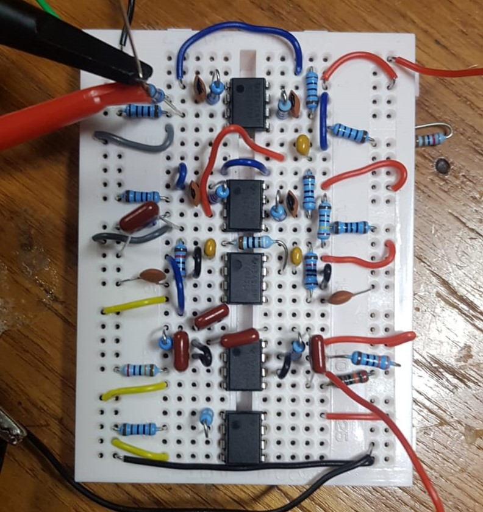
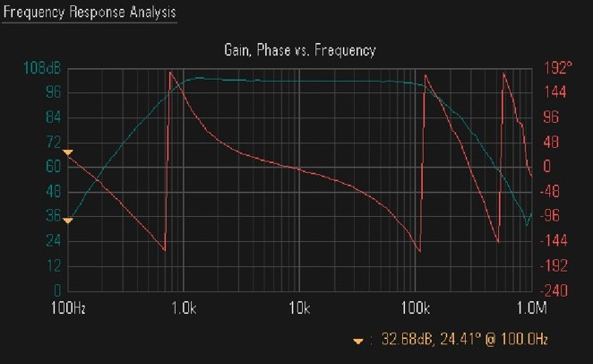

AMP 2nd Year Labs
Skills: Analogue Design,
The aim of the project was to design and build a low noise, high gain, broadband amplifier. The key challenges in this project where meeting the gain and frequency specifications. Below is a schematic of the amplifier.

.png)
The main challenge facing designing amplifiers with high gain is that configuring a single op-amp with a high gain reduces the gain bandwidth. In order to avoid restricting the gain bandwidth and thus the amplifiable frequency range, the total gain is distributed across several op-amps which then multiply.

Noise outside the desired/amplified frequency range was/is removed by using high and low pass filters to attenuate and remove noise above and below the cut off frequencies. To acheive sharper stop bands 4th order butterworth filters were used which were simply two 2nd order sallen key filters in series. Component values were calculated using the Filter Wizard on the Analog Devices website.
Below is the final Frequency Response of the unloaded amplifier demonstrating that the gain requirement is met and the required frequency range is also met.
